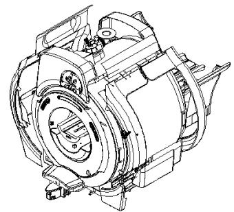
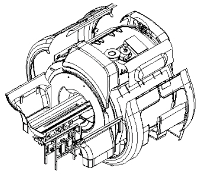

Operating Documentation
Direction 5133330-3, Rev# 14
Signa EXCITE HD 3.0T Service Methods
Module Version 4.0, Version Date 11/19/10
Operating Documentation |
The Dock Motor Speed Procedure is required as part of set-up and calibration. Procedures for opening magnet enclosure covers and adjusting patient dock hardware (Dock Centering and Dock Hardware Adjustments) are provided in case related Dock problems arise.
Description - Procedures for opening magnet enclosure covers and adjusting patient dock hardware.
Open Enclosure (MG2):
The magnet open enclosure consists of 18 panels all removable, plus the front and rear end bells (Illustration 1 and Illustration 2).
Illustration 1: ACCESS TO MAGNET ENCLOSURE FRONT VIEW

Illustration 2: ACCESS TO MAGNET ENCLOSURE REAR VIEW

| NOTE: | All enclosure component seams and gaps visible to the
operator and patient shall be less than 0.25 inches (6.35 mm). Exceptions
may be made in areas where esthetic visual enhancement of the component
gap is required by industrial design. The gap at the seam between the enclosure and RF coil shall not exceed 0.125 inches (3.175 mm). Gap uniformity along any continuous seam shall be + - 0.0625 inch (1.59mm) |